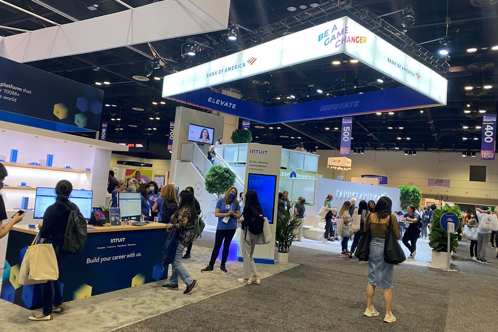

September 24, 2022

One of the best college experiences I have had so far was going to the Grace Hopper Conference 2022 in Orlando, Florida. I did not know what to expect from the experience, except for networking and some free T-shirts. I never expected the friendships, corporate connections and empowerment I would receive.
The Grace Hopper Conference was like a themepark, but with free goodies, great entertainment and the theme was women empowerment in the Computing field. I finally felt like I had an opportunity to get the internships and jobs that many women, especially women of color like myself get overlooked for in this field. Some of the amazing companies I was able to interview for were, Bank of America, Warner Bros, and Oracle just to name a few.
Bank of America Booth at GHC 2022
The one company that truly took notice of me was Bank of America. Bank of America was one of the only companies that did not just focus on the technical aspects but took notice of the outreach work I was doing at MSU. After having an interview with Bank of America I was invited to go out to The Wizarding World of Harry Potter for the evening and a private dinner. If they had not already won me over with such a fun night I also attended a seminar held by several female software engineers at Bank of America. They talked about how at Bank of America they had an equal number of both female and male employees working in Computing and all the opportunities they had for women. It just made me feel so good to hear that women’s needs and voices are being heard at such a large company and so many women feel comfortable and happy at their workplace. That was when I truly realized that I had picked a great company to intern with this coming summer.
Beyond the great things GHC 2022 has given me career and entertainment wise. I truly felt that I was able to get close to so many of the girls in WIC and maintain those friendships throughout the school year. I would never take that for granted. My advice for anyone going to the Grace Hopper Conference is to beat those nerves and look for the companies that speak to you.